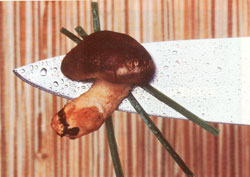
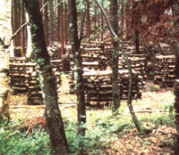
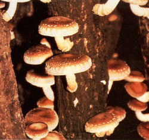

A delight to the palate, the shiitake (pronounced she-ee-tah-key) mushroom can turn waste wood into $20-a-pound produce.
Its flavor has been likened to those of lobster and filet mignon. It's low in calories, it's high in protein and B vitamins, and it reduces serum cholesterol. The shiitake, the savory Japanese forest mushroom, is a rising star of the gourmet world. And for those with the requisite time and patience, it can also be the core of a lucrative, low-labor business.
Shiitake (Lentinus edodes) has been grown commercially in Japan for centuries and is still one of that country's major agricultural exports. But until 1972, you couldn't cultivate the mushroom in this country; live shiitake culture was banned in the United States. Because shiitake is lignicolous-which means that it lives on wood, drawing its nutrients from lignin and cellulose-there was concern that the fungus could spread beyond its areas of cultivation and attack railroad ties and wooden structures. That theory proved false, however, and now even the usually staid USDA predicts a promising future for domestic shiitake farmers.
Some experts, in fact, expect the mushroom eventually to supplant the more familiar button type at supermarkets. Small-scale growers are already finding profitable markets as more and more restaurants, co-ops, oriental food stores, and farmers' markets clamor for the delicacy-and pay anywhere from $4 to $20 (and sometimes more!) a pound.
Shiitake mushrooms are traditionally grown outdoors on seasoned hardwood logs-preferably oak, although maple, birch, poplar, aspen, beech, and other species have also been used successfully. Shiitake spawn won't do well on live or green wood, however, nor is it likely to survive on deadfall wood, or on stock contaminated by lichens or other fungi. It's necessary, therefore, to cut logs for shiitake cultivation from freshly felled trees or justtrimmed limbs. [EDITOR'S NOTE: See the sidebar "Improving Your Woodlot with Shiitake. "]
For the sake of manageability, the stock should measure between three and six inches in diameter. Fell the trees in late fall or winter, when they're leafless and when the wood's sugar content is highest and most beneficial to fungus growth. Then cut the logs into 40-inch lengths, being careful to keep the bark intact-the bark is a critical requirement for fruiting. It's important, too, to get the wood up off the ground immediately, to avoid contamination from other organisms. Any logs that appear to be diseased or that have fungus growing on them should be used only for firewood.
Stack the billets out of the sun and wind to cure, making sure to leave spaces between the logs for air to circulate freely-the crib stack method shown in the photo on page 40 is an effective arrangement. A shady spot in the woods under a stand of pines is an ideal place to season logs; or, if necessary, you can create a suitable environment by building (or planting) a windbreak and using a tarpaulin for shade. If you live in an area where there is much rainfall, you may need to keep a cover over the wood. Snow, on the other hand, does no harm to the wood.
Now you can go back to your other chores for a while, since the cut logs need to cure for 30 to 90 days, or until their moisture content has dropped to 40 or 50%. Professional foresters and shiitake cultivators use a special measuring device to determine the moisture content of wood. You can test your stock, though, by cutting about six inches off a log, then cutting a one-inch slice from the new end. Weigh the one-inch piece, then dry it in an oven at 120° for about 48 hours. (To avoid tying up your oven for that long, you can use a small toaster oven, or simply dry the slice overnight for several nights in a row.) Weigh the wood occasionally, and when it ceases to lose weight, subtract the dry weight from the wet weight to find the weight of water in the log. Then divide the weight of the water by the original wet weight . . . multiply that figure by 100 . . . and you'll have the percentage of moisture in the logs.
When the moisture content has dropped to 40 or 50%, the logs can be inoculated. This is usually done in early spring. About six to eight weeks beforehand, order your spawn plugs-short wooden dowels impregnated with shiitake spawn (see the sidebar for a list of suppliers). If you get the plugs before the wood is cured, just store them in the refrigerator. You'll need at least 3,000 plugs per cord of wood; if you want to grow only enough mushrooms for your family, though, 300 or so-about 15 logs' worth-should suffice. (Of course, the more plugs you buy, the greater the savings. And if you can, buy tapered plugs; they're much easier to use.)
You'll also need to gather together a few tools and additional materials: cheese wax (available from cheese-making supply companies; ordinary paraffin is an acceptable, but less desirable, alternative), a double boiler, a cooking thermometer, a hammer, a small paintbrush, and a drill and 5/16" bit with a stop collar.
Ready? OK, find a shady area to work in, since direct sunlight can damage the spawn. In each log to be inoculated, bore a row of oneinch-deep holes spaced no more than ten inches apart; then turn the log about two inches and drill another row of holes parallel to the first but with the cavities offset so that each is alongside the space between holes in the adjacent row. Continue this pattern around the log. (Some growers recommend that woods of light density, such as aspen and birch, be cut to a length of just three feet and the spawn plugs placed every five inches.) Obviously, smallerdiameter logs will take fewer plugs than larger ones.
Once the holes have been bored, it's important to introduce the spawn immediately; if you drill your logs one day and plug them the next, other organisms will have enough time to contaminate the logs. Hammer the spawn plugs firmly into the holes, flush with the wood, and then use a paintbrush to apply a coating of melted wax over the plugs. (Melt the wax in a double boiler, making sure that its temperature remains under 212°F. Hotter wax will kill the spawn.) Growers in dry, windy climates sometimes also wax one end of each log, to help keep moisture in and contaminants out.
With the inoculation done, restack the logs in a well-drained, shaded area. (At this stage, instead of using the crib stack, many growers lean the logs at a 45° angle against each side of a horizontal pole, A-frame style, to provide more growing surface.) The logs will take between one and two years to bear fruit. After your first crop is harvested, however, you can count on additional harvests every spring and fall for the next three to five years. All good things are worth waiting for!
For now, you need only check your logs once a week or so for contamination. If you see surface molds or other fungi, try providing more air circulation around the logs to take care of the problem. If you notice any logs that are heavily contaminated with surface molds, that are losing their bark, or that are producing other kinds of mushrooms, remove them.
Another thing to watch out for is excessive drying. Turning the logs occasionally (twice per growing season is usually enough) helps to keep the logs' moisture evenly distributed. If you live in an area where the humidity is normally low in the summer months, a porous covering (such as burlap) should be placed over the logs to help them retain moisture. If it's an extremely dry summer, the logs' moisture content may be in danger of dropping below 30%, the minimum required for the fungus to live. If these conditions occur, test the logs for water content again, and if necessary, soak them. Just a hosing down isn't enough. They should be soaked steadily with sprinklers or in a tub or nearby stream for 24 hours.
Shiitake usually fruits in the spring and the fall. You may be able to tell when fruiting is imminent by checking the ends of the log for a white, fuzzy growth called mycelium; if you see it, you know the spawn has permeated the log. If, after 18 or more months from inoculation, you still can't see any mycelium, cut a thin slice six inches in from the end of a log and place it in a covered jar with a damp cloth. This should force the mycelium to appear within a couple of days.
Once the mycelium shows itself, you can relax a little, because the chances of other organisms contaminating the wood at this point are slim. On the other hand, you may still be in for a wait before the mushrooms appear. Just be patient and trust the power of time and nature. A heavy rainfall-particularly one following a dry period-can cause the permeated logs to begin fruiting. If Mother Nature simply-refuses to do the work for you, a good soaking will usually do the trick.
When the mushrooms do begin to form, you'll need to harvest them daily during the fruiting stage, which usually lasts about a week. Shiitake mushrooms emerge as rounded knobs; as they grow, the brown, gilled caps gradually open and flatten, becoming quite large (two to six inches in diameter). The stems are thick and meaty. The best time to pick a shiitake mushroom is just before the cap flattens completely; simply pull the fungus off the log with a twisting motion. (Shiitake mushrooms are easily distinguishable from most wild mushrooms, but if you have any doubt about the kind growing on your logs, by all means check with someone who can make a positive identification before you consume or distribute them!)
Fresh shiitake stores well for up to two weeks if kept refrigerated in ventilated containers. However, for every hour after the mushrooms are picked and not refrigerated, they lose a day of shelf life-so you'll probably want to refrigerate them quickly. On the other hand, if you need to store some for longer than just a couple of weeks, or if you want to hold a supply to wait for anticipated higher market prices, they can easily be dried outdoors on a hot, sunny day or in a commercial dehydrator. (Many people say that the shiitake's flavor is enhanced when dried; to rejuvenate dehydrated mushrooms for cooking, just soak them in hot water for 15 to 30 minutes.)
The cost for shiitake spawn averages $30 to $45 per 1,000 plugs. A person who intends to cultivate the mushrooms on a commercial scale (and who would probably qualify for a quantity discount) can expect to spend about $200 on spawn for each cord of wood used.
The return on that cord of wood after fruiting begins should be at least $450 each year for the life of the logs, or about three to five years. This is based on a conservative market-price estimate of $4 per pound, fresh weight. Markets vary locally, of course, so you'll need to check the going rate in your locale for more accurate earnings projections. Fresh shiitake generally brings the highest prices-but I recently discovered a co-op where dried shiitake was selling for $50 a pound!
As you can see, growing shiitake takes care and patience, but you can successfully cultivate this delectable mushroom and enjoy not only a delightful addition to your dinner table, but an extra income as well. Next time you head out to cut firewood, you just might find yourself eyeing those logs from a different point of view!
EDITOR'S NOTE: Shiitake is grown in most parts of the country-but not always outdoors. In particularly hot, dry climates, and in regions where humidity and moisture foster vast numbers of competing fungi; shiitake is usually cultivated indoors, in a controlled environment, using techniques other than the traditional one discussed here. One such method was outlined in "A Fungus Fit for a King" on page 87 of MOTHER NO. 65. Anothersaid to shorten the time for spawn growth to as little as four months-is detailed in "Shiitake Gardening and Farming, "available for $3.00 postpaid from Mushroompeople (listed in the sidebar "Sources for Shiitake Spawn').
Researchers at the Forest Resource Center in Lanesboro, Minnesota, where experiments with shiitake cultivation have been going on for several years, see an additional advantage to growing the mushrooms. Joe Deden and Mitch Gilbert, the center's resident foresters, view shiitake cultivation as an excellent way for landowners to use the smalldiameter, low-grade hardwood trees that should be thinned out of a woodlot as a matter of good management. "Families can develop small businesses with shiitake mushrooms that can increase their income and improve their woodlots too, " Deden says. He recommends that you consult a forester for help !n choosing trees that will both provide suitable shiitake logs and encourage better growth of your woodlot by their removal.
So far, Deden and Gilbert have attempted to grow shiitake on 16 different species of wood, using a variety of techniques. In addition to practicing the traditional Japanese method explained in this article, the foresters have been experimenting with growing the mushroom yearround indoors. They encourage anyone interested in shiitake cultivation to come to the resource center to talk with them and view their operation. "Growing shiitake is a learn-as-you-go proposition, " says Deden. "We recommend that people start small and then expand their operations as they learn which techniques are best for their areas. "
In addition, the center offers an excellent threetimes-a year publication, The Shiitake Newsletter, for $25 a year. For further information on the center-or for answers to questions about growing shiitake-send a selfaddressed, stamped envelope to the S. E. Minnesota Forest Resource Center, Rt. 2, Box 156A, Lanesboro, MN 55949.
Imagine a thriving vegetable garden in which there are no leaves, no stems, no vines . . . only vegetables-some small and rapidly growing, others plump and fully ripened, still others just emerging-which have slowly come up through the soil from plants beneath the ground.
That, in essence, is what you see when you happen across a patch of mushrooms in a meadow or forest.
A mushroom is only the visible part-the fruitof a fungus plant. The vegetative portion, called the mycelium, grows underground or (as in the case of shiitake) within an organic host, or substrate, such as wood. Wild mushrooms develop from microscopic seed called spores, while commercial growers usually propagate their mushrooms using spawn: small colonies of mycelia-seedlings, in effect-that have been started in a medium suitable to the species being raised. The spawn, in turn, is then transplanted to the substrate, where the mycelium can spread, mature, and eventually send fruit above ground.
The exact conditions that prompt fruiting are yet to be fully understood, in part because the requirements vary greatly by species (and there are roughly 10,000 mushroom species in North America alone!). Some varieties fruit in response to alternating periods of wet and dry and/or cold and warm, while others require a sustained climate, often one that's quite humid. Many mushrooms require shade, while others thrive in sunlight (there are several types, in fact, that grow only in desert areas). Some species of mushrooms emerge, ripen, release their spores, and rot within a matter of hours . . . yet othersparticularly lignicolous varieties such as shiitake-can take years to emerge and, once they do, can grow and develop for weeks or even months before completing their life cycle.
|
 A shady, wind protected spot in the woods is an ideal place to cure the logs which you plan to inoculate with shiitake spawn. The crib stack method shown allows air to flow freely around the billets. |
 Shiitake mushrooms are lignicolous, drawing nutrients from the lignin and cellulose in dead wood. They will eventually reach a size of two to six inches in diameter. The caps, which begin as round buttons, flatten as the mushrooms mature. |
 |